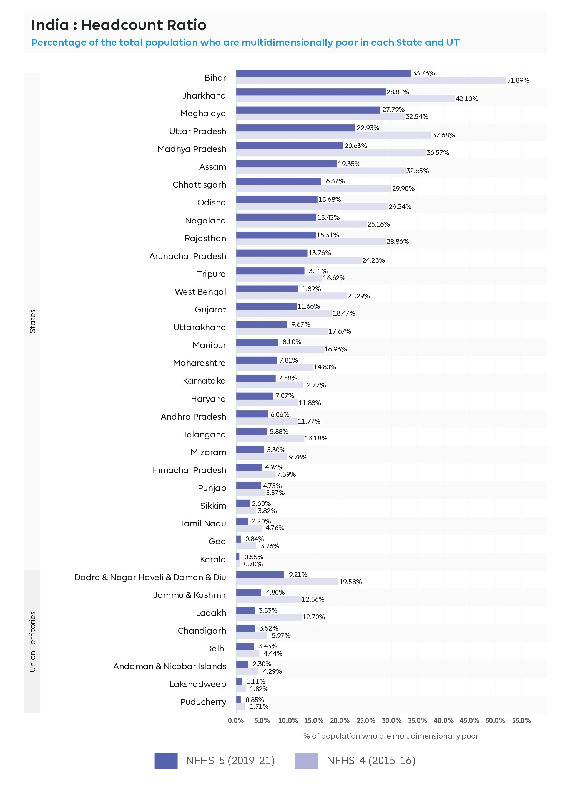
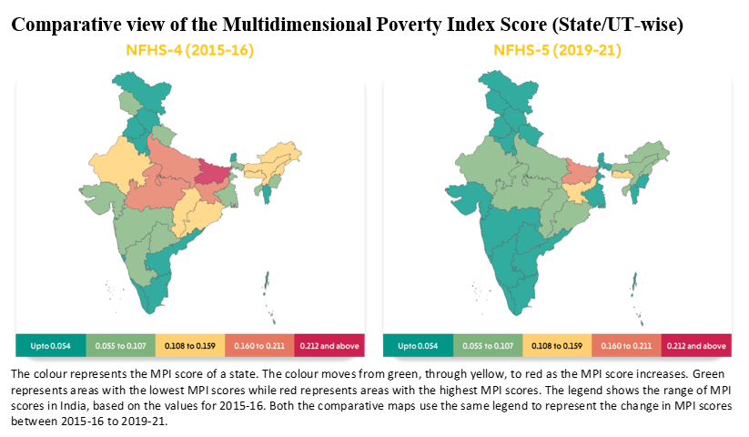

Overview of poverty in India

- India made a significant process in reducing poverty with the World Bank saying that 171 million people have been lifted out of extreme poverty over the past decade.
- Extreme poverty, defined as living on less than $2.15 (Rs 44 = €0.43) per day, dropped from 16.2% in 2011-12 to 2.3% in 2022-23. Extreme poverty rate as of 2025 is around 5.75% of the population.
- The World Bank's updated $3 (Rs 62 = €0.60) per day poverty line, 5.75% of Indians live in extreme poverty, a decrease from 27% in 2011-12.
- The top states with the highest poverty rates are Bihar (33.76%), Jharkhand (28.81%), Meghalaya (27.79%), Uttar Pradesh (22.93%), Madhya Pradesh (20.63%) and Assam (18.3%).
- States with the lowest poverty rates are Kerala & Goa (Both under 1%).
- India is on track to achieve the Sustainable Development Goal of reducing multi-dimensional poverty by at least half well before the 2030 deadline.
- Targeted inclusive development policies, including free and subsidized food transfers, have played a crucial role in poverty reduction. The use of direct benefit transfers through strong rural infrastructure and digital inclusion has also been highlighted as a key factor, as noted by the World Bank.
Causes of poverty
Government initatives

- The Indian government has a lot of different initatives for people going through poverty. The schemes are Mahatma Gandhi National Rural Employment Guarantee Act (MGNREGA), National Rural Livelihood Mission (DAY-NRLM), Saansad Aadarsh Gram Yojana (SAGY), Pradhan Mantri Garib Kalyan Anna Yojana (PMGKAY), National Food Security Act, PM Ujjwala Yojana, Pradhan Mantri Awas Yojana (PMAY), Pradhan Mantri Gram Sadak Yojana (PMGSY), Jal Jeevan Mission, Ayushman Bharat (PM-JAY), Pradhan Mantri Jan Dhan Yojana (PMJDY), Direct Benefit Transfer (DBT), National Social Assistance Programme (NSAP), PM-KISAN & NAVYA. Indian government initiatives for poverty include wage employment guarantees like MGNREGA, livelihood promotion through schemes like DAY-NRLM for self-help groups, and social safety nets for food, housing, and health through programs like PMGKAY, PMAY, and Ayushman Bharat. Other initiatives focus on financial inclusion via PM-JDY and improving rural infrastructure through PMGSY.
- The current anti-poverty strategy of the government is based broadly on two planks: promotion of economic growth and targeted anti-poverty programmes. Awareness is being spread across the nation specifying the importance of education, which has resulted in an increase in the literacy level.
Summary:
- Poverty Reduction: India lifted 171 million people out of extreme poverty over the past decade.
- Extreme Poverty Decline: Rates fell from 16.2% in 2011–12 to 2.3% in 2022–23; estimated at 5.75% in 2025.
- Updated Poverty Line: At $3/day, 5.75% of Indians are still in extreme poverty, down from 27% in 2011–12.
- Regional Disparities: Highest poverty in Bihar, Jharkhand, Meghalaya; lowest in Kerala and Goa (under 1%)
- Causes: Education gaps, unemployment, poor healthcare, and social inequality.
- Government Initiatives: Programs like MGNREGA, PMAY, Ayushman Bharat, and PMJDY target employment, housing, health, and financial inclusion.
Sign up for newsletter:
References:
- World Bank. India Poverty and Equity Brief : October 2025 (English). Poverty and Equity Brief Washington, D.C. : World Bank Group.
- The number of poor are falling in India; is it time to shift the poverty line now?
- How poor is 'poor' in India?
- Poverty in India: Real-Life Consequences & Sustainable Solutions
- Multidimensional Poverty Index (MPI), Report 2025, Indicator, Calculation
- 10 Interesting Facts about India
- India